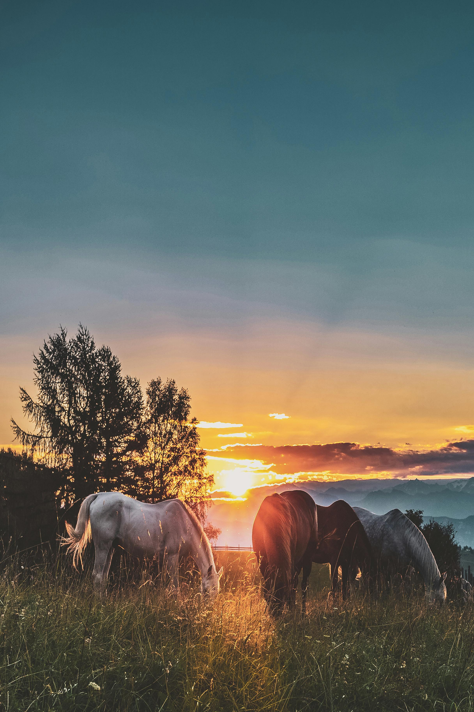

The beauty of nature is a timeless source of inspiration, evoking a sense of peace, awe, and connection. It exists in every leaf, mountain, and star, reminding us of the intricate patterns and wonders of the world. Whether it’s the golden hues of a sunset painting the sky, the soft whispers of a forest breeze, or the mesmerizing rhythm of ocean waves, nature holds a quiet power to heal, uplift, and ground us. Nature’s beauty is also found in its diversity—how different ecosystems, from dense jungles to vast deserts, all come together to create harmony. The bright colors of a blooming flower, the majestic silhouette of a mountain at dawn, or the simple grace of a bird taking flight—all of these elements highlight nature’s ability to be both delicate and fierce. For many, being surrounded by nature allows a deeper reflection on life, helping people find balance and perspective. It’s almost as though the natural world holds a mirror to our own lives, inviting us to slow down, observe, and appreciate the simple yet profound moments around us. Do you have a specific place in nature that makes you feel particularly connected or inspired?